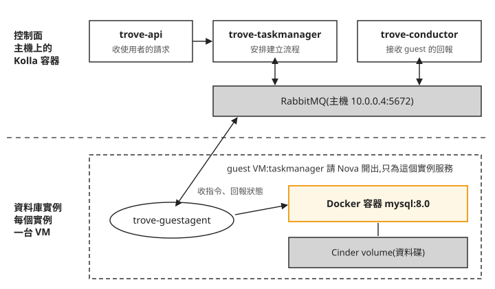
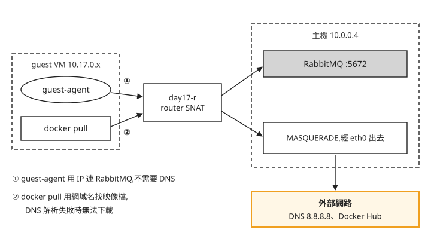
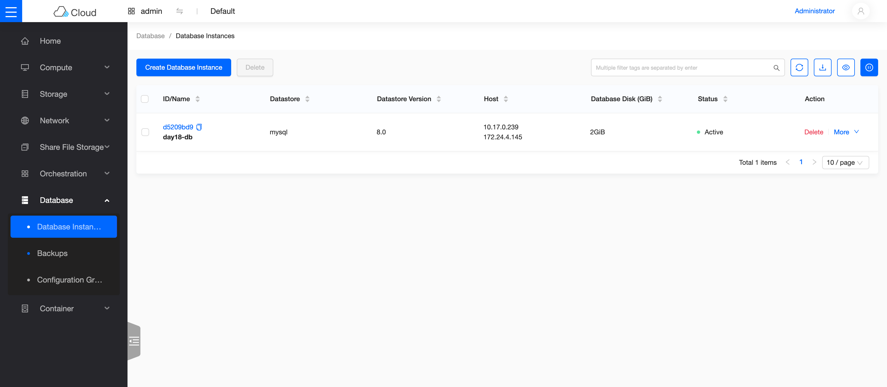
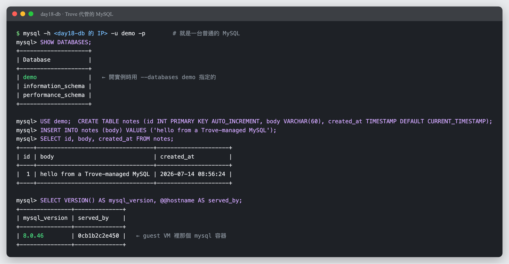

Day 18: Trove——代管資料庫服務:guest VM、datastore 與建立失敗時的判讀¶
團隊要一台 MySQL。在雲上自己開一台 VM 裝,安裝、設定、建帳號、備份、升版都得自己來;用過 AWS RDS 的人知道另一種做法:下一行指令,幾分鐘後拿到一台已經建好資料庫和帳號的 MySQL,底下的機器不用管。這種服務叫 DBaaS(Database as a Service,資料庫即服務),OpenStack 裡負責這件事的服務是 Trove。
這一章在 Day 17 的雲上部署 Trove,開出第一台代管 MySQL,實際讀寫。第一次建立實例時,很可能等兩分鐘後看到它轉成 ERROR,錯誤訊息只有一句 failed to spawn。讀完之後,遇到這種狀況,你能從「guest 有沒有回報狀態」判斷問題出在 guest 連回控制面的那條路,還是 guest 內部,並且知道要趁失敗的 VM 被自動清掉之前先把 console log 拿到手。
代管資料庫由哪些東西組成¶
使用者下一行「給我一台 MySQL」,Trove 實際做的事是:請 Nova 開一台專門跑這個資料庫的 VM,掛上 Cinder volume 當資料碟,在 VM 裡把 MySQL 跑起來,建好你要的資料庫和帳號。之後建帳號、建資料庫這類操作,也是由 Trove 轉交給 VM 裡的程式去執行。
把參與的元件畫出來,上半部是主機上的控制面,下半部是每個資料庫實例各自的一台 VM:

我們可以從圖上看到兩件事:
- 控制面有三個元件。
trove-api收使用者的請求;trove-taskmanager負責建立流程,包括請 Nova 開 VM;trove-conductor接收 VM 裡回報的狀態。三個都跑在主機上,步驟 1 部署完會看到這三個容器。 - 資料庫跑在一台 VM 裡的 Docker 容器中。 這台 VM 叫 guest VM,裡面除了作業系統,只有兩樣東西:Trove 的代理程式 guest-agent(
trove-guestagent),以及 Docker。MySQL 本身是 guest-agent 用 Docker 拉下來啟動的容器。所以 guest 映像檔不用跟著 MySQL 版本走,要換資料庫版本,換的是容器映像檔的版本標籤。
控制面和 guest-agent 之間不直接連線,而是透過 RabbitMQ(Day 1 提過,OpenStack 服務內部互傳工作和通知用的訊息佇列)傳遞:taskmanager 把「建資料庫」「建使用者」這類指令放進佇列,guest-agent 取出來執行;guest-agent 也定期把狀態送回 conductor。這表示 guest VM 必須連得到主機上的 RabbitMQ,步驟 4 之前會再回來看這條路怎麼走。
步驟 1:部署 Trove¶
跟前幾章加服務的做法一樣,在 globals.yml 打開 Trove,只部署它這一組:
echo 'enable_trove: "yes"' | sudo tee -a /etc/kolla/globals.yml
source ~/kolla-venv/bin/activate
kolla-ansible deploy -i ~/all-in-one --tags trove
failed=0 之後,用 docker ps 確認 trove_api、trove_taskmanager、trove_conductor 三個容器都是 healthy,再進下一步。
步驟 2:準備 guest 映像檔¶
Trove 開 guest VM 時,要從 Glance 找一份裝好 guest-agent 和 Docker 的映像檔。Trove 專案在 tarballs.opendev.org 提供每天自動建置的 guest 映像檔(約 1.4 GB),下載後上傳到 Glance,並打上兩個 tag:Trove 開 VM 時是用 tag 找映像檔,不是用名稱,步驟 3 會設定要找哪兩個 tag。
curl -L -o ~/trove-guest-noble.qcow2 \
https://tarballs.opendev.org/openstack/trove/images/trove-master-guest-ubuntu-noble.qcow2
source /etc/kolla/admin-openrc.sh
openstack image create trove-guest-ubuntu-noble \
--file ~/trove-guest-noble.qcow2 --disk-format qcow2 --container-format bare \
--tag trove --tag mysql
檔名裡的 master 表示這份映像檔是從 Trove 的開發主線建出來的,不是 2025.1 的穩定分支。原驗證使用這個路徑當時提供的 Ubuntu 24.04(noble)映像檔,搭配 2025.1 控制面成功建立實例;這不能保證現在下載的 daily 映像仍相容。但它每天都會被新版覆蓋,今天下載的跟幾個月後下載的不一定相同。要長期使用或之後升級控制面時,照官方 guest 映像檔建置指南用對應分支自己建一份,版本才固定得住。
步驟 3:註冊 datastore¶
映像檔準備好了,還要告訴 Trove 有哪些資料庫可以開。Trove 把「一種資料庫」叫 datastore(例如 mysql),把它底下的每個版本叫 datastore version(例如 8.0)。每個 datastore version 記著兩件事:開 guest VM 時用哪些 tag 找映像檔,以及 guest-agent 要拉哪個版本的資料庫容器。
先安裝 Trove 的 CLI 外掛。跟 Day 16 的 Manila 一樣,openstack 指令預設沒有 database、datastore 這些子命令,要另外裝(見 Day 16 的「openstack 沒有 share 子命令」):
pip install python-troveclient
openstack datastore version create 8.0 mysql mysql "" \
--image-tags trove,mysql --active --default --version-number 8.0
openstack datastore version list mysql
datastore version create 後面四個位置參數依序是:版本名稱 8.0、datastore 名稱 mysql、資料庫管理類型 mysql(guest-agent 用哪一套邏輯管理這個資料庫),最後的 "" 是映像檔 ID,這裡留空,改用 --image-tags trove,mysql 讓 Trove 找帶著這兩個 tag 的映像檔,也就是步驟 2 上傳的那份。--version-number 8.0 決定拉哪個版本的 MySQL 容器,--default 讓使用者建立實例時不指定版本也會用它。
guest 怎麼連回 RabbitMQ¶
建立實例之前,先看 guest VM 要往外連的兩條路。官方文件的做法是替 Trove 另外建一條管理網路(management network):每台 guest VM 多掛一張網卡在這條網路上,只用來跟控制面溝通,資料庫的流量則走使用者自己的網路。
本課先不建管理網路,讓 guest VM 只接在 Day 17 建好的 day17-net 上。Day 2 看過,租戶網路的 VM 經過 router 的 SNAT 到達主機,而主機上的 RabbitMQ 就在 10.0.0.4,所以這條路本來就通。下面這張圖把 guest 往外的兩條路分開畫:

照著圖上的編號看:
- 路徑 ①:guest-agent 連 RabbitMQ。 guest-agent 的設定裡寫的是 IP,所以這條路不需要 DNS。
- 路徑 ②:guest-agent 拉 MySQL 容器。 容器映像檔是用網域名稱找的,guest 要先查 DNS,查不到就拉不到,MySQL 也就起不來。
這兩條路需要的東西不同,所以會出現一種狀況:路徑 ① 通了,guest-agent 能回報狀態,但路徑 ② 斷了,MySQL 起不來。步驟 4 動手前先檢查的就是路徑 ② 需要的 DNS。
少建一條管理網路,換來的是安全上的代價。guest-agent 要連 RabbitMQ,它的設定檔裡就有 RabbitMQ 的帳號密碼;官方文件也指出,guest VM 被攻破,這組帳密就跟著外洩,等於訊息系統被攻破。本課的做法還讓租戶網路直接連得到主機上的 RabbitMQ。正式環境要建專用的管理網路,讓租戶網路碰不到控制面,並照官方文件啟用 Trove 的訊息加密(enable_secure_rpc_messaging),降低跨實例訊息遭讀取或偽造的風險,不能將它視為 guest 遭入侵後的完整隔離保證。本課沒有檢查 Kolla 預設是否啟用這項加密。
步驟 4:建立資料庫實例¶
網路沿用 Day 17 建立的 day17-net。動手前先確認 subnet 設有 DNS nameserver,也就是上一節路徑 ② 需要的東西。Day 17 建 subnet 時已經加了 --dns-nameserver 8.8.8.8,換用其他 subnet 的話更要先查:
結果是空的,就先用 openstack subnet set <subnet> --dns-nameserver 8.8.8.8 補上。接著建立實例:--size 2 是資料碟大小(GB,會建成一顆 Cinder volume),--databases 和 --users 讓 Trove 在 MySQL 起來後順便建好資料庫和帳號:
NET=$(openstack network show day17-net -f value -c id)
openstack database instance create day18-db \
--flavor m1.medium --size 2 --nic net-id=$NET \
--datastore mysql --datastore-version 8.0 \
--databases demo --users demo:<你的密碼>
watch openstack database instance show day18-db -c status -c operating_status
watch 會每兩秒刷新一次狀態。這段時間裡,Nova 開出 guest VM 並掛上資料碟,guest-agent 開機後連回 RabbitMQ,拉 mysql:8.0 容器、啟動,再建好 demo 資料庫和使用者。幾分鐘後會停在下面的狀態:
這裡有兩個狀態欄位。status 是 Trove 對整個實例的狀態,ACTIVE 代表建立流程走完了;operating_status 是 guest-agent 回報的資料庫服務狀態,HEALTHY 代表 MySQL 真的在跑。兩個都到位才算可以用。
如果等了兩分鐘左右,status 變成 ERROR,先用 openstack database instance show day18-db 看 fault 欄位。訊息是 Service not active, status: failed to spawn 的話,這句話是 guest-agent 自己回報的:它能回報,代表路徑 ① 是通的,問題在 guest 內部,本章原有的失敗案例是路徑 ② 的 DNS 沒設;其他映像檔下載或 MySQL 啟動問題也可能產生相同狀態,還要查 guest 的紀錄。另外,Trove 會自動刪掉建立失敗的 guest VM,要看 VM 的開機訊息就得馬上動手,見疑難排解:失敗的 guest VM 會被自動刪除。
步驟 5:驗證它是一台真的資料庫¶
ACTIVE 加 HEALTHY 只是狀態,接下來實際操作它。先讀:下面兩個查詢會從 Trove API 經 RabbitMQ 轉給 guest-agent,再由 guest-agent 查 MySQL,所以能回結果代表整條路都通:
再寫:新建一個使用者和一個資料庫,讓 guest-agent 真的去改 MySQL 的內容:
openstack database user create day18-db u2 <密碼>
openstack database db create day18-db demo2
openstack database db list day18-db # demo、demo2 都在
demo2 出現在清單裡,代表 guest 裡的 MySQL 在運作,也接受了寫入。
如果 Day 13 已部署 Skyline,這次只跑 Trove tag 不會更新 Skyline 的代理路由。先讓 Skyline 套用新服務設定,再開下一張頁面。下列命令是依部署模板補齊的前提,沒有獨立的本課執行輸出:
接著從使用者的角度看。Skyline 的「Database」頁列出這台實例,欄位有 datastore、版本、配發到的位址、磁碟大小和狀態,完全沒有提到底下的 Nova VM:

這是 Trove 的預設設計:從 Ussuri 版開始,guest VM、Cinder volume 這些底層資源都建在 Trove 自己的 service project 裡,使用者看不到,只能透過 Trove API 操作實例。
最後看 MySQL 的資料連線。這條連線不經 Trove API:用戶端必須裝好 mysql CLI,並且能從所在網路連到實例的 MySQL 位址與 3306 port。單機 lab 的租戶私有位址不會直接開放給你的電腦;可使用已接入 day17-net 的用戶端,或先依既有網路章節建立可達的連線。這份素材沒有保留用戶端建置過程,因此下列 SQL 只適用於已具備這些前提的用戶端。
用前面的 openstack database instance show day18-db 查看實例位址,填入 <database-ip>;登入帳號與密碼用建立實例時的 demo 那組。以下命令與 SQL 來自原有截圖,沒有另補結果:
SHOW DATABASES;
USE demo;
CREATE TABLE notes (id INT PRIMARY KEY AUTO_INCREMENT, body VARCHAR(60), created_at TIMESTAMP DEFAULT CURRENT_TIMESTAMP);
INSERT INTO notes (body) VALUES ('hello from a Trove-managed MySQL');
SELECT id, body, created_at FROM notes;
SELECT VERSION() AS mysql_version, @@hostname AS served_by;
下圖依序呈現查資料庫、建表、寫入、查詢的結果:

我們可以看到最後一行的 served_by 欄位,回答查詢的是 guest VM 裡那個 mysql 容器,也就是步驟 3 註冊、步驟 4 拉下來的那個版本。使用者不需要知道這件事,拿到的就是一台可以連的 MySQL。
疑難排解¶
實例約兩分鐘後轉 ERROR,fault 是 failed to spawn¶
症狀:openstack database instance show 的 fault 是 Service not active, status: failed to spawn。
原因:這份失敗案例的 subnet 沒設 DNS nameserver,但 failed to spawn 本身不能唯一證明是 DNS。guest-agent 用 IP 連 RabbitMQ,所以還能回報狀態;但 guest 裡拉 mysql 容器要查網域名稱,查不到就啟動失敗。判讀方式見步驟 4最後一段。
修法:openstack subnet set day17-sub --dns-nameserver 8.8.8.8,刪掉失敗的實例後重新建立。
失敗的 guest VM 會被自動刪除¶
症狀:實例轉 ERROR 後,想用 openstack console log show 看 guest 的開機訊息,卻找不到那台 VM。
原因:Trove 會自動刪除建立失敗的 guest VM,console log 跟著一起消失。
修法:用管理員身分在 Nova 的所有專案列表中找到對應的 guest VM,確認實例 ID 後立即取得 console log。Trove 實例名稱不等於 Nova server ID;先取得對應關係才能把 openstack console log show 指向正確的 VM。來不及的話,只剩主機上 taskmanager 的 log 可以查(/var/log/kolla/trove/)。
backup create 只印出 usage¶
症狀:照舊教學把實例名稱當第一個位置參數執行 openstack database backup create,指令直接印出 usage。
原因:新版 troveclient 改了參數格式。
修法:寫成 openstack database backup create --instance <實例> <備份名>。
備份卡在 guest 拉取備份工具容器¶
症狀:備份會把資料上傳到物件儲存,也就是 Day 15 的 RGW。備份任務可以成功送出(storage_driver: swift),但 guest 在拉取備份工具的容器時卡住,備份沒有完成。
原因:guest 拉不到備份工具容器的映像檔。
修法:方向是在 /etc/kolla/config/trove/trove-guestagent.conf 覆寫備份容器的來源,再重新部署 Trove。本課沒有驗證這個修法,備份與還原在本課沒有走完。
想一想¶
- 另一個專案的使用者在自己建的網路上開 Trove 實例,兩分鐘後轉
ERROR,fault 是failed to spawn。他問你是不是 RabbitMQ 連不上。你會怎麼回答,第一個要他查的是什麼? - 如果沒有收到 guest-agent 的狀態回報,還能用上一題的理由排除 RabbitMQ 連線問題嗎?接下來應先查哪一條路?
- 主管想讓租戶自己開 Trove 實例,但不希望租戶的 VM 碰得到控制面的 RabbitMQ。這一章的網路做法要改哪裡?
小結¶
Trove 用一台專屬的 guest VM 承載每個資料庫實例:控制面的 api、taskmanager、conductor 跑在主機上,VM 裡的 guest-agent 透過 RabbitMQ 收指令、回報狀態,真正的 MySQL 是它拉下來的 Docker 容器。所以 guest VM 往外有兩條路,用 IP 連 RabbitMQ,用網域名稱拉容器,第二條需要 subnet 設好 DNS。之後遇到 Trove 實例建立失敗,先看 fault 是不是 guest-agent 自己回報的:是的話,路徑 ① 沒問題,往 guest 內部查,並趁 VM 被刪掉之前抓 console log。Day 13 到 Day 18 加上的 Skyline、Ceph、RGW、Manila、Designate、Trove,到這裡都已經接進這朵雲。
延伸閱讀¶
想再深入，可以從這幾份開始：
- Trove 生產環境部署指南 —— 官方的管理網路設計、guest 裡 RabbitMQ 帳密的安全考量與訊息加密設定;本章省略管理網路的做法可以拿來對照。
- Trove guest image 建置指南 —— 自己建 guest 映像檔的官方流程與
trovestack用法,要固定映像檔版本時從這裡開始。 - 官方 guest image 下載處 —— 每日自動建置的映像檔放在這裡,步驟 2 從這裡下載。
- Trove User Guide —— 實例、備份、設定群組的使用者操作說明。
下一步¶
到這一章為止,每一天都在替這朵雲加新服務。Day 19 換個方向,不再加東西,改為拆開已經用了三個星期的服務:追一個 API 請求從取得 token 到 qemu 開出 VM 的完整過程。